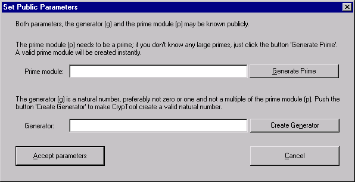

This dialog window appears after clicking the Set public parameters button from within the Diffie-Hellman Demonstration.
The dialog prompts you to insert the public parameters of the Diffie-Hellman key exchange protocol.

Please insert the prime module p first because the verification of the generator g directly depends on the prime module.
You need to bear in mind that the use of a selv selected prime module, especially if it's not prime could weaken the security of the proceeding. Thus, push the button Generate Prime if you want CrypTool to generate a safe prime.
Furthermore, please notice that the bit length of the prime module is an essential aspect concerning the security of the proceeding. However, for demonstration purposes insecure values are certainly acceptable.
You can also let CrypTool create a generator (also called primitve root) if you push the button Create Generator. If you rather would choose a number g for yourself, please bear in mind that cannot guarantee the generator property. Please do not select for g one of the following numbers
They also restrict the security of the proceeding.
The button Accept parameters closes the dialog and leads you to the next step of the protocol.